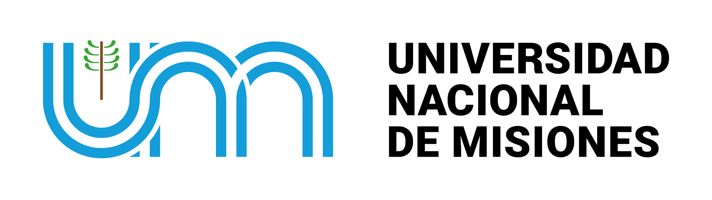

Cátedra Comunicación I
En PreparaciónMódulo disponible para incorporar consignas y bibliografía de la cátedra (Ciclo 2026).

FHyCS'" />Facultad de Humanidades y Ciencias Sociales — Universidad Nacional de Misiones
Repositorio digital que recopila análisis discursivos, piezas periodísticas, producciones transmedia e investigaciones desarrolladas durante el cursado regular en la Sede Cerro Azul.
Módulo disponible para incorporar consignas y bibliografía de la cátedra (Ciclo 2026).
Propuesta de formación universitaria de pregrado de la Facultad de Humanidades y Ciencias Sociales (UNaM — Sede Cerro Azul), orientada a la producción de contenidos, el desarrollo territorial y la alfabetización mediática en Misiones.
Lengua y Comunicación
Cátedra activa con trabajos prácticos, análisis discursivos y lecturas.
Comunicación I
Módulo en articulación curricular para la incorporación de consignas.
Estudiantes regulares de la Tecnicatura abocados a la investigación, producción discursiva y gestión de contenidos abiertos.
Coordinación & Repositorio Digital
Producción de contenidos, articulación territorial y soporte técnico del archivo colaborativo.
Investigación & Análisis Discursivo
Relevamiento temático, registro de fuentes y análisis crítico situado de problemáticas regionales.
Redacción & Cultura Visual
Redacción institucional, comunicación digital, dinamización visual y divulgación comunitaria.
Producción & Archivo de Campo
Producción de piezas comunicacionales, registro territorial y conservación del archivo colectivo.
Publicación directa en el repositorio institucional de la Sede Cerro Azul
Título de la Publicación
Lengua y Comunicación • Sede Cerro Azul
Actualiza los datos o reemplaza el archivo en Supabase
¿Seguro que deseas eliminar esta publicación?
⚠️ Se borrará permanentemente de la base de datos y del almacenamiento en Supabase Storage.